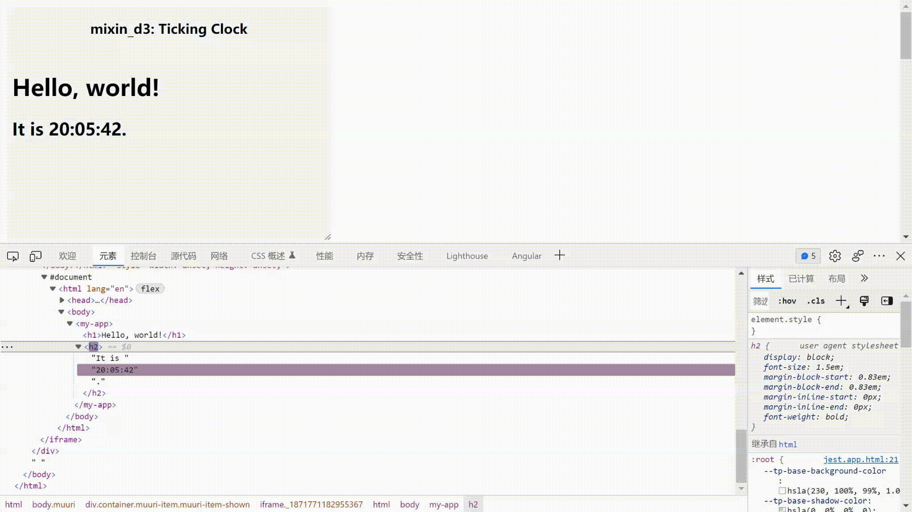

Mixin D3
Although the component-based frameworks, e.g. vue, react, angular, are used everywhere, D3js is still the industry standard for data visualization. Lots seem not to be big fans of how D3 handles updating DOM, especially at the moment that You-Don't-Need-jQuery. Then some things become interesting and annoying, libraries go back and forth between abstraction and flexibility, from the most talented DSL to low-level vanilla js, many awesome projects appear every year, as well as the totally awesome browsers.
Modern browsers come with a suite of different technologies called Web Components, the heavily used development way in our vanilla js projects, with loads of dependent of D3, I write the mixin_d3.js, to approach a little bit of more friendly data-driven programming, which just works as below.[1] Edit in here, or if you prefer typescript.

document.body.innerHTML = '<my-app viewBox="0,0,960,500"></my-app>';
const myApp = document.querySelector("my-app");
myApp.data = [
{
tag: "circle",
attrs: {
class: "component",
fill: "steelblue",
r: 20,
cx: 40,
cy: 250,
},
transitions: [
{
duration: 2000,
attrs: { cx: 920 },
},
{
duration: 2000,
attrs: { cx: 40 },
events: {
end() {
// repeat the circle
myApp.data[0].transitions = myApp.data[0].transitions;
},
},
},
],
},
];
It seems yet another JSON-style coding library? 😒, um...Yes, a sort of. If you're interested, don't be hesitated to run/test the code, just yarn && yarn tw and open http://localhost:3000 to see more examples, such as a very simple bar chart, Tic Tac Toe against react tutorial. All codes are MIT licenced, please feel free to copy or prune to anywhere you like.
Happy coding.
NOTE: Following contents are modified from reactjs along with CC-BY-4.0 license.
Hello World
The smallest mixin_d3 example looks like this:
<script type="module">
window.customElements.define(
"my-app",
class extends MixinD3 {
connectedCallback() {
super.connectedCallback();
this.data = [{ tag: "h1", text: "Hello, World" }];
}
}
);
</script>
<my-app></my-app>
It displays a heading saying "Hello, world!" on the page.
Click the link above to open an online editor. Feel free to make some changes, and see how they affect the output. Most pages in this guide will have editable examples like this one.
Rendering Children
Children are the smallest building blocks of mixin_d3 Web Components.
A child describes what you want to see on the screen:
const children = [{ tag: "h1", text: "Hello, world" }];
Unlike browser DOM elements, mixin_d3 children are JSON-like objects, and are cheap to create. mixin_d3 takes care of updating the DOM to match the children.
Rendering children into the DOM
Let's say there is a <my-app> somewhere you have created from Hello World section in your HTML file:
<my-app>
<h1>Hello, World</h1>
</my-app>
By default, a custom element itself or its attached shadowRoot is the "root" DOM node where mixin_d3 will render children at. In the case of <my-app> the root is itself.
To render mixin_d3 children, simply assigns the array to myApp.data:
document.querySelector("my-app").data = [{ tag: "h1", text: "Hello, world" }];
Toggle on the Console panel in Hello World example and paste the above code.
It displays "Hello, world" on the page.
Updating the Rendered Element
mixin_d3 children are changelog. Once you create a child datum, you can change its attributes, properties, etc.. A child is merely a set of modifications, unlike react's element which depicts a full state of UI.
With our knowledge so far, one way to update the UI is just mutate this.data.
Consider this ticking clock example:
class MyApp extends MixinD3 {
connectedCallback() {
super.connectedCallback();
this.data = [
{ tag: "h1", text: "Hello, world!" },
{ tag: "h2", key: (d) => d },
];
setInterval(() => {
this.data[1].children = ["It is ", new Date().toLocaleTimeString(), "."];
}, 1000);
}
}
It sets this.data[1].text every second from a setInterval() callback.
Only Updates What’s Necessary?
Short answer is can. Unlike react acts as a black box for DOM comparison, mixin_d3 derives d3 which maps data to node explicitly by either index or key to determine if to create/update/destroy a node. In last example we use the key function (d) => d to let d3 identify <h2>'s children by data itself, i.e. "It is " , `${new Date().toLocaleTimeString()}` and ".".
You can verify by inspecting the last example with the browser tools:

Even though we reset the children array describing the whole UI tree on every tick, only the text node whose contents have changed gets updated by the way how d3 works with a key. If you remove it, you will see nothing changed after the first rendering for such children.